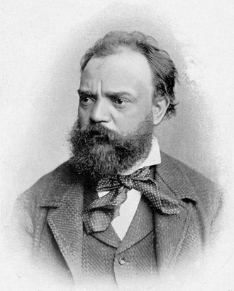

Antonín Leopold Dvořák (/d(ə)ˈvɔːrʒɑːk, -ʒæk/ d(ə-)VOR-zha(h)k, Czech: [ˈantoɲiːn ˈlɛopold ˈdvor̝aːk] (About this soundlisten); 8 September 1841 – 1 May 1904) was a Czech composer, one of the first to achieve worldwide recognition. Following the Romantic-era nationalist example of his predecessor Bedřich Smetana, Dvořák frequently employed rhythms and other aspects of the folk music of Moravia and his native Bohemia. Dvořák's own style has been described as "the fullest recreation of a national idiom with that of the symphonic tradition, absorbing folk influences and finding effective ways of using them".[1]
Dvořák displayed his musical gifts at an early age, being an apt violin student from age six. The first public performances of his works were in Prague in 1872 and, with special success, in 1873, when he was aged 31. Seeking recognition beyond the Prague area, he submitted a score of his First Symphony to a prize competition in Germany, but did not win, and the unreturned manuscript was lost until rediscovered many decades later. In 1874 he made a submission to the Austrian State Prize for Composition, including scores of two further symphonies and other works. Although Dvořák was not aware of it, Johannes Brahms was the leading member of the jury and was highly impressed. The prize was awarded to Dvořák in 1874[a] and again in 1876 and in 1877, when Brahms and the prominent critic Eduard Hanslick, also a member of the jury, made themselves known to him. Brahms recommended Dvořák to his publisher, Simrock, who soon afterward commissioned what became the Slavonic Dances, Op. 46. These were highly praised by the Berlin music critic Louis Ehlert in 1878, the sheet music (of the original piano 4-hands version) had excellent sales, and Dvořák's international reputation was launched at last.